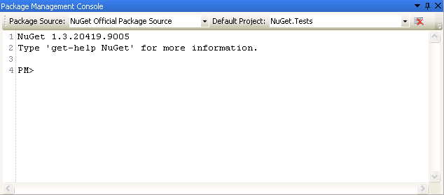
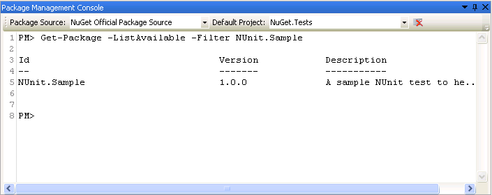
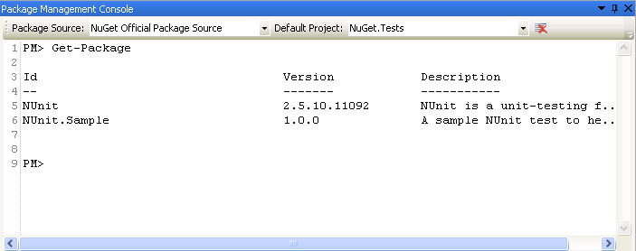
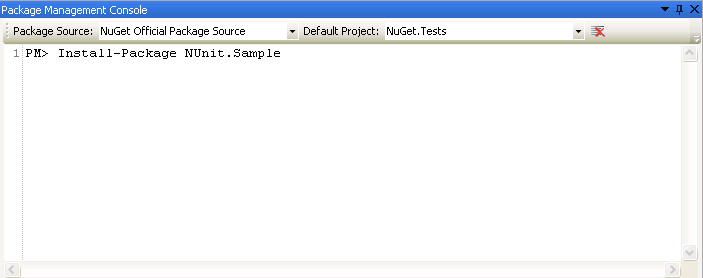
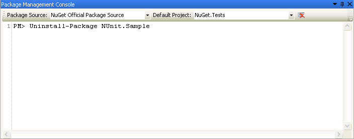
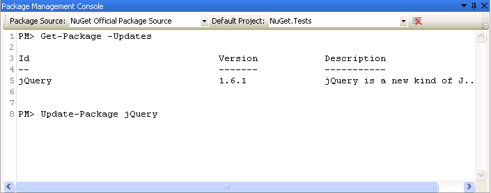

Since the NuGet support in SharpDevelop was previewed back in January development has continued and some new features have been added. One of the new features that we will take a look at now is a new PowerShell console that allows SharpDevelop 4.1 to support installing, updating and uninstalling NuGet packages that contain PowerShell scripts.
The Package Management Console is SharpDevelop's new PowerShell console. It provides several cmdlets that can be used to install, uninstall or update NuGet packages. NuGet packages can contain PowerShell scripts that will automate SharpDevelop and extend the functionality provided by NuGet.
To open the Package Management Console from the View menu select Tools and then select Package Management Console.

The Package Source drop down list is used to select the NuGet package repository that will be used by default when running commands. The Default Project drop down list has a list of projects in the currently open solution and is used to select the project that the console will use by default. There is also a clear button which clears the text in the console window.
Help on the commands can be displayed by typing get-help NuGet. To see detailed help on a specific command type get-help followed by the name of the command. Help on the commands can also be found in the official NuGet Package Manager Console PowerShell Reference. Please note that at the time of writing some of the commands are not available but will be added at some point in the future. The unsupported commands are specified in the Issues section at the end of this blog post.
To find available NuGet packages from a NuGet package source first select that source in the console's drop down list and use the Get-Package command.
To look for the NUnit.Sample package:

To display the packages installed in the project selected in the drop down list run the Get-Package command without any parameters.

To install a package first select the required NuGet package source, then select the project where the package should be installed and then use the Install-Package command.

To remove a NuGet package use the Uninstall-Package command.

To see packages that have updates available you can run the Get-Package -Updates command. To update a package use the Update-Package command.

The Add Package Reference dialog supports installing, updating or uninstalling a package with PowerShell scripts. If it detects that a PowerShell script needs to be run then the package install, update or uninstall actions will be run in the Package Management Console. If PowerShell is not installed then the package will still be installed but the PowerShell scripts will not be run.
There are three PowerShell scripts that if included in a NuGet package will be run.
More details on these scripts can be found in the NuGet documentation on Creating and Publishing a Package.
When these PowerShell scripts are run they are passed the package, information about the package such where it will be installed and a project object. The scripts also have access to a global $dte variable which is made available by the PowerShell console. If you are using NuGet within Visual Studio then both the project object passed to a PowerShell script and the DTE object, made available via the $dte variable, are part of the Visual Studio object model and can be used to automate Visual Studio. When using SharpDevelop's PowerShell console these objects are also available and can be used to automate SharpDevelop. To do this SharpDevelop provides its own partial implementation of the Visual Studio object model. SharpDevelop implements a set of classes that provide methods and properties that to PowerShell scripts look like Visual Studio's object model but are not dependent on Visual Studio being installed.
Since SharpDevelop's implementation of Visual Studio's object model is not a full implementation there are going to be some gaps which will mean a PowerShell script may produce some errors when it is run. If a script tries to use a feature provided only by Visual Studio then that will fail too. Another problem is that if a NuGet package directly references and uses the Visual Studio object model then the package will also not work. So this means whilst a package such as Phil Haack's MoodSwings, which changes the text editor fonts and colours, does work a package such as Steve Sanderson's MvcScaffolding that directly accesses Visual Studio directly does not work.
The Package Management Console does not currently support tab completion.
The entire Visual Studio object model (DTE) is not implemented so PowerShell scripts that use unimplemented features will fail.
Multline PowerShell commands are not currently supported in the console window.
Information messages, such as successfully installing a package, are not displayed in the console window and only errors are displayed. These messages are only available in the Output window.
The NuGet PowerShell profile is not currently supported.
The New-Package, Open-PackagePage, Add-BindingRedirect cmdlets are not currently implemented.
Please report any issues on the SharpDevelop forum or feel free to send me an email.